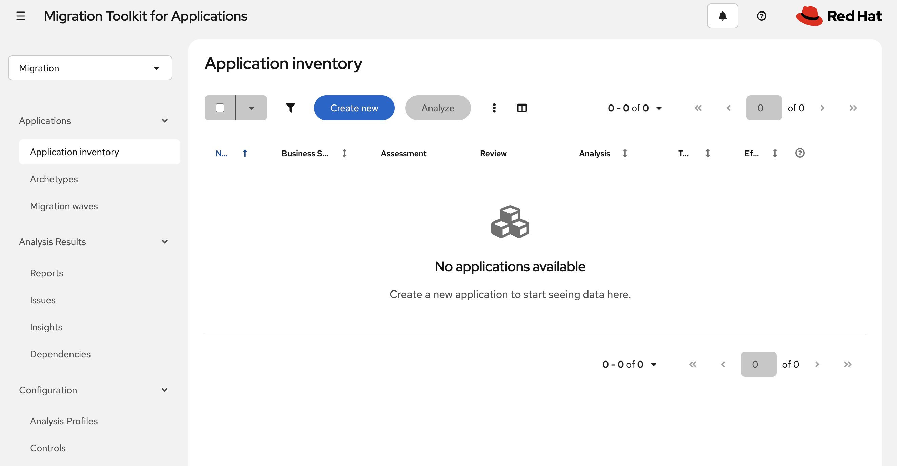
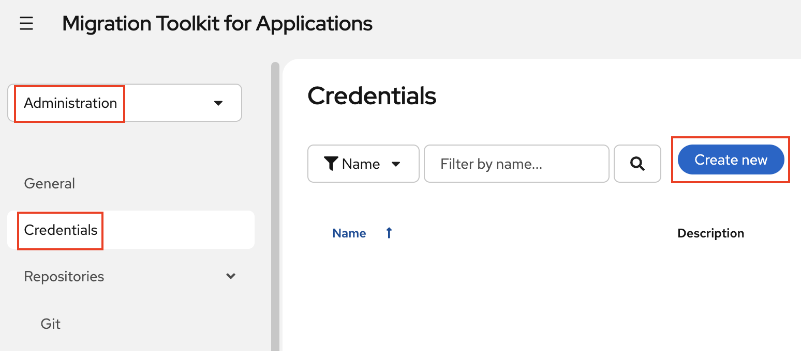
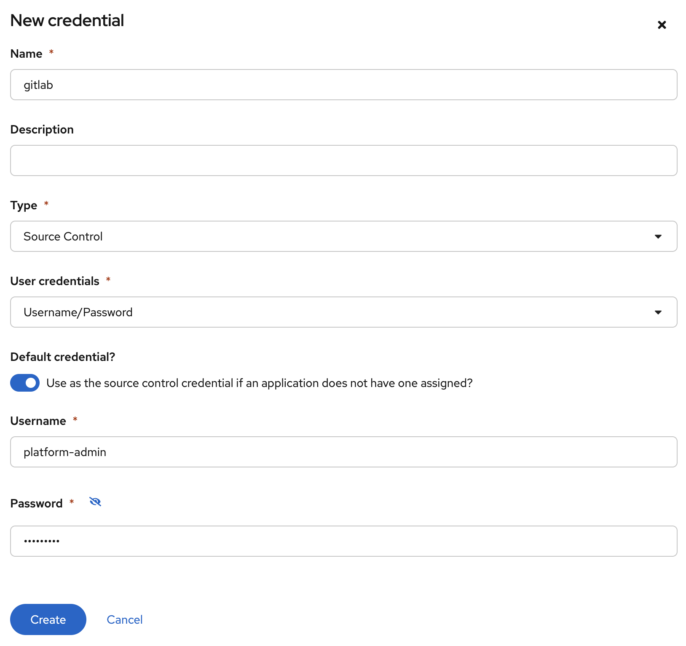
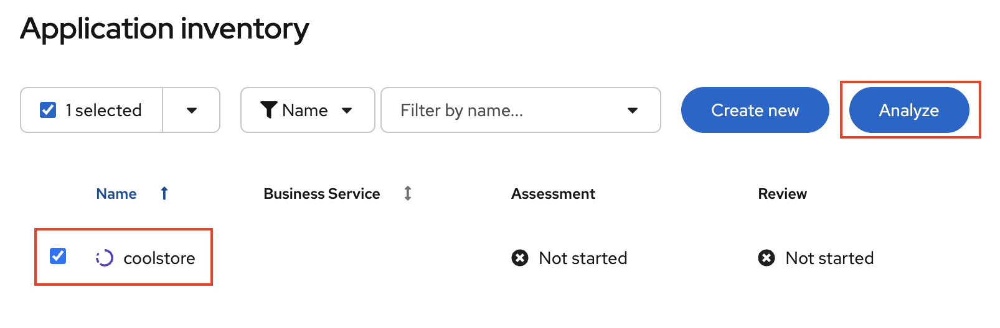
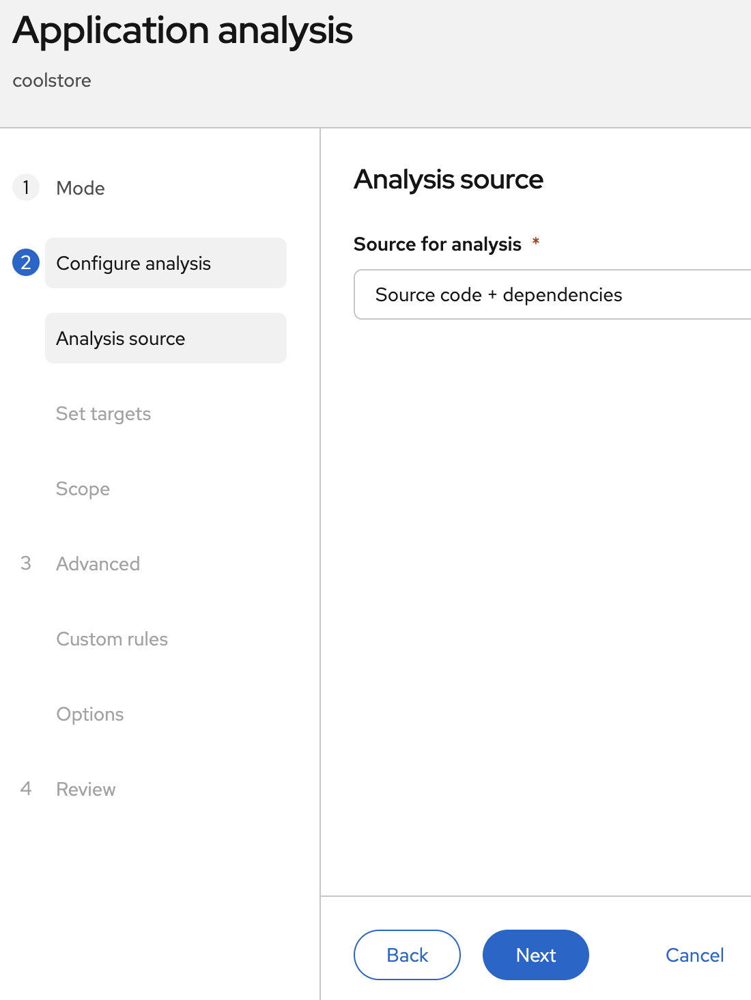
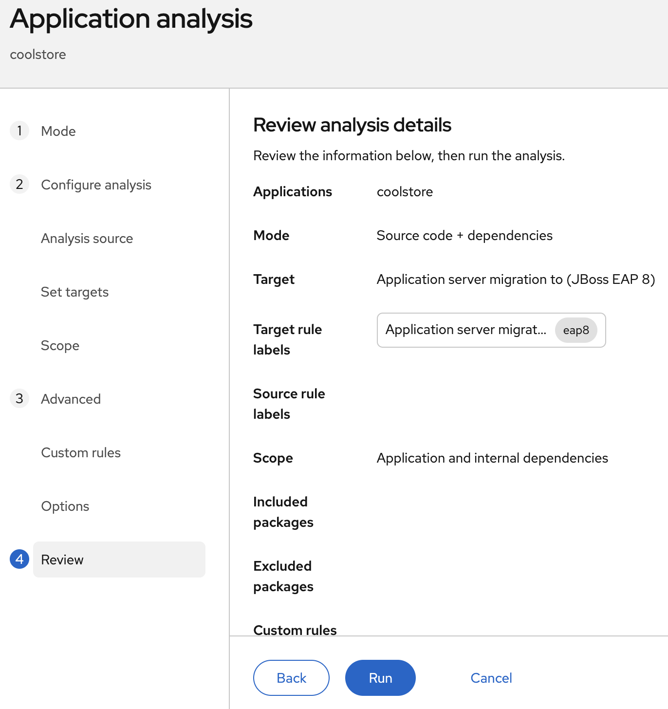
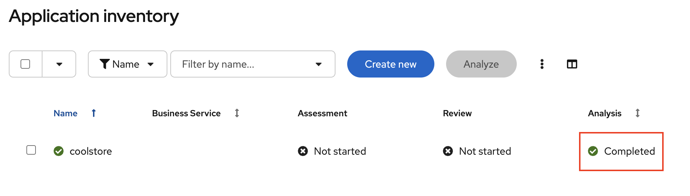
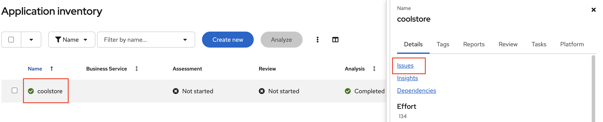

Lab 2: Application Modernization with MTA
Overview
Use the Migration Toolkit for Applications (MTA) to analyze a legacy Java application, identify migration issues, and modernize it to run on a Red Hat Runtime.
Register with the Red Hat MaaS platform
-
Open the Red Hat Model-as-a-Service portal in a new browser tab:
-
Sign in with your Red Hat credentials
Use your Red Hat account associated with your OpenShift environment.
-
Navigate to Models from the dashboard
-
Select granite-3-2-8b-instruct from the list of models
-
Click btn:[Subscribe]
-
Navigate to API Keys from the dashboard
-
Click btn:[Create API Key] and fill in the details:
-
Name:
MTA-Dev -
Description:
AI-assisted modernization for MTA -
Model:
granite-3-2-8b-instruct
-
-
Click btn:[Create API Key]
-
Copy the generated API key
-
Save the API key to a secure location. You will need it in the next step.
Install MTA
Install via OperatorHub
-
In the OpenShift Web Console, go to menu:Ecosystem[Software Catalog]
-
Search for Migration Toolkit for Applications
-
Click btn:[Install]
-
Accept the defaults and click btn:[Install]
-
Wait for the operator to reach the
Succeededphase
Ignore the Tackle CR to deploy the MTA web console as you shall be doing in the next step.
Verify from the CLI:
oc get csv -n openshift-mta | grep mtaDeploy the MTA Web Console
Create a secret for the MTA API key:
oc create secret generic kai-api-keys -n openshift-mta \
--from-literal=OPENAI_API_BASE='https://maas-rhdp-frontend.apps.maas.redhatworkshops.io/v1' \
--from-literal=OPENAI_API_KEY='<YOUR_MTA_API_KEY>'Create a Tackle CR to deploy the MTA web console:
apiVersion: tackle.konveyor.io/v1alpha1
kind: Tackle
metadata:
name: mta
namespace: openshift-mta
spec:
feature_auth_required: 'false'
feature_isolate_namespace: "false"
maven_data_volume_size: "10Gi"
analyzer_container_limits_cpu: "1"
analyzer_container_limits_memory: "4Gi"
analyzer_container_requests_cpu: "500m"
analyzer_container_requests_memory: "2Gi"
hub_container_limits_cpu: "2"
hub_container_limits_memory: "4Gi"
hub_container_requests_cpu: "500m"
hub_container_requests_memory: "2Gi"
kai_llm_proxy_enabled: true
kai_solution_server_enabled: true
kai_llm_provider: openai
kai_llm_model: granite-3-2-8b-instruct
kai_llm_baseurl: "https://maas-rhdp-frontend.apps.maas.redhatworkshops.io/v1"
kai_solution_server_container_limits_cpu: "1"
kai_solution_server_container_limits_memory: "2Gi"
kai_solution_server_container_requests_cpu: "500m"
kai_solution_server_container_requests_memory: "1Gi"
kai_llm_proxy_container_limits_cpu: "1"
kai_llm_proxy_container_limits_memory: "2Gi"
kai_llm_proxy_container_requests_cpu: "500m"
kai_llm_proxy_container_requests_memory: "1Gi"Apply it:
oc apply -f mta-tackle.yaml(OPTIONAL) Force a reconcile if you update the secret:
oc patch tackle mta -n openshift-mta --type=merge -p \
'{"metadata":{"annotations":{"konveyor.io/force-reconcile":"'"$(date +%s)"'"}}}'Wait for the pods to be ready:
oc get pods -n openshift-mta -w
You should see the following pods running:
-
kai-api-xxxx-xxx
-
kai-db-xxxx-xxx
-
llm-proxy-xxxx-xxx
-
mta-hub-xxxx-xxx
-
mta-operator-xxxx-xxx
-
mta-ui-xxxx-xxx
-
rhbk-operator-xxxx-xxx
Get the MTA console route:
oc get route -n openshift-mtaOpen the URL in your browser. You should see the MTA web console.
https://mta-openshift-mta.{openshift_cluster_ingress_domain}
Use OpenShift Login to log in.
Analyze the Application
Set Up GitLab Integration
-
In the MTA web console
-
Go to menu:Administration[Credentials]
-
Click btn:[Create new]

-
Fill in the details:
-
Name: gitlab
-
Type: Select "Source Control"
-
User Credentials: Select "Username/Password"
-
Default credential?: Checked
-
Username:
platform-admin -
Password:
openshift
-
-
Click btn:[Create]

Figure 1. Screenshot of the GitLab credentials page
Create an Application in MTA
-
Go to menu:Migration[Applications > Application inventory]
-
Click btn:[Create new]

-
Fill in the application details:
-
Name:
coolstore -
Manual Tags:
Runtime/EAP -
Source code → Source repository: {gitlab_url}/mta-apps/coolstore.git
-
Branch:
main
-
-
Click btn:[Create]

Run the Analysis
-
Select the application and click btn:[Analyze]

-
Select Mode: Manual Selection and click btn:[Next]

-
Keep the default settings for Analysis source and click btn:[Next]

-
In Set Target select: "JBoss EAP 8" and click btn:[Next]

-
In Set Scope select: "Application and internal dependencies only" and click btn:[Next]

-
Keep the default settings for Custom Rules and click btn:[Next]
-
Keep the default settings for Advanced options and click btn:[Next]
-
Click btn:[Run]

The analysis scans the source code, dependencies, and configuration files against MTA’s rule sets. This may take a few minutes depending on the size of the application.

Review the Analysis Report
Once the analysis completes:
-
Click on the application name to view the report and select Issues:

-
Review the categories:
-
Mandatory — Changes required for the migration to succeed
-
Optional — Improvements that are recommended but not required
-
Information — Context and documentation links

-